Contract Hub
Documentación completa para la plataforma de firma electrónica nativa de Talkpush para reclutamiento de alto volumen.
Introducción
Contract Hub es la plataforma de firma electrónica nativa de Talkpush, diseñada específicamente para flujos de trabajo de reclutamiento de alto volumen. Permite a los equipos de contratación crear, enviar y gestionar contratos de empleo de forma completamente digital — desde la creación de plantillas hasta la firma del candidato.
A diferencia de las herramientas genéricas de firma electrónica, Contract Hub se integra directamente con el CRM de Talkpush, lo que permite la distribución automática de contratos basada en datos del candidato, el auto-llenado de campos y la actualización de estado en tiempo real — todo sin intervención manual.
Características principales:
- Constructor de plantillas con editor visual de campos arrastrar y soltar
- Envío automático de contratos basado en atributos del candidato
- Auto-llenado de campos del contrato desde perfiles de Talkpush
- Asistente IA que explica los términos del contrato a los candidatos en lenguaje sencillo
- Experiencia de firma móvil accesible vía WhatsApp, SMS o correo electrónico
- Auditoría con hash SHA-256 para cumplimiento legal
- Arquitectura multi-tenant con control de acceso basado en roles
Conceptos Clave
| Término | Descripción |
|---|---|
| Contrato (Plantilla) | Un documento reutilizable (PDF o DOCX) con campos configurados que se envía a los candidatos para su firma. |
| Sobre | Un grupo de una o más plantillas de contrato que se envían juntas como un solo paquete de firma. |
| Regla de Asignación | Condiciones de filtro que determinan qué candidatos reciben qué sobres, basadas en atributos de Talkpush. |
| Sesión de Firma | Una instancia de firma individual — un candidato específico firmando un sobre específico de documentos. |
| Editor de Campos | La herramienta visual donde se arrastran y colocan los campos interactivos sobre las páginas del contrato. |
| Campo | Un elemento interactivo colocado en un contrato (firma, campo de texto, casilla de verificación, menú desplegable, etc.). |
| Empresa | Un espacio de trabajo aislado para una organización. Cada empresa tiene sus propias plantillas, sesiones, usuarios y configuraciones. |
| Tenant de Talkpush | El identificador de la organización que vincula una empresa de Contract Hub con un CRM específico de Talkpush. |
Iniciar Sesión
Contract Hub soporta dos métodos de autenticación:
- Correo electrónico y contraseña — Ingrese sus credenciales proporcionadas por su administrador.
- Google SSO — Haga clic en Continuar con Google para autenticarse con su cuenta de Google Workspace.
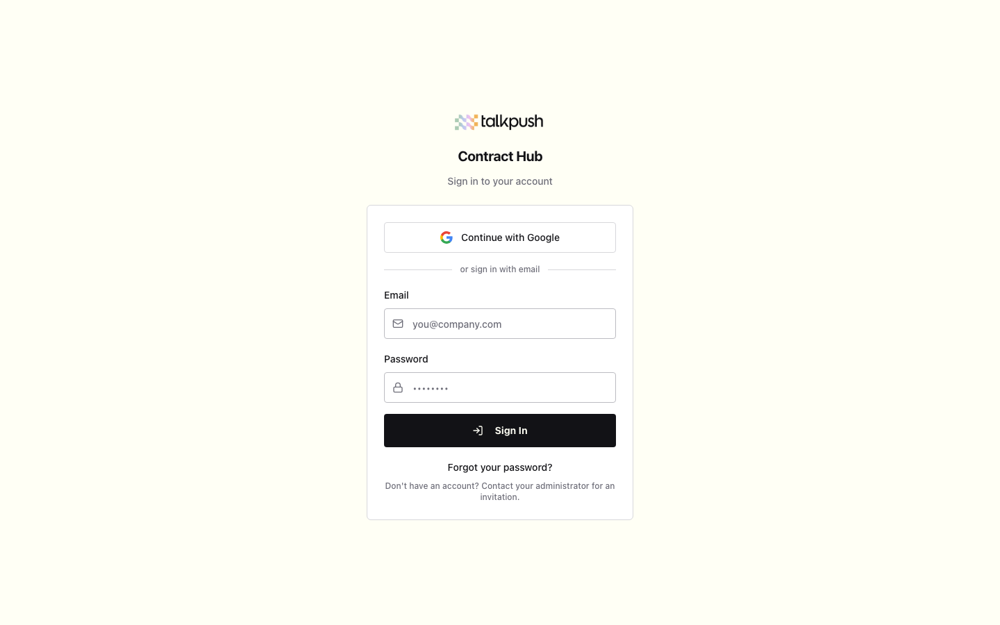
Selector de Empresa
Después de iniciar sesión, verá el Selector de Empresa. Contract Hub es multi-tenant, lo que significa que cada empresa opera como un espacio de trabajo independiente. Si tiene acceso a múltiples empresas, elíjalas aquí.
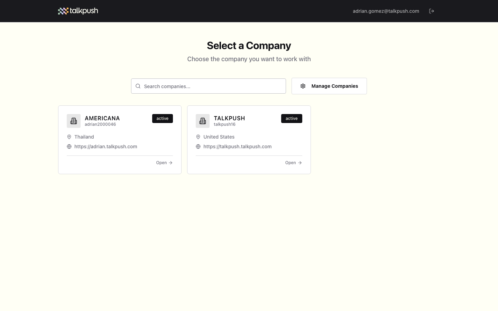
Haga clic en una tarjeta de empresa para ingresar a ese espacio de trabajo. Todos los datos (plantillas, sesiones, usuarios) están limitados a la empresa seleccionada. Para cambiar de empresa más tarde, haga clic en el nombre de la empresa en la barra lateral.
Panel Principal
El Panel Principal proporciona una vista general de la actividad de contratos de su empresa. Es la primera pantalla que ve después de seleccionar una empresa.
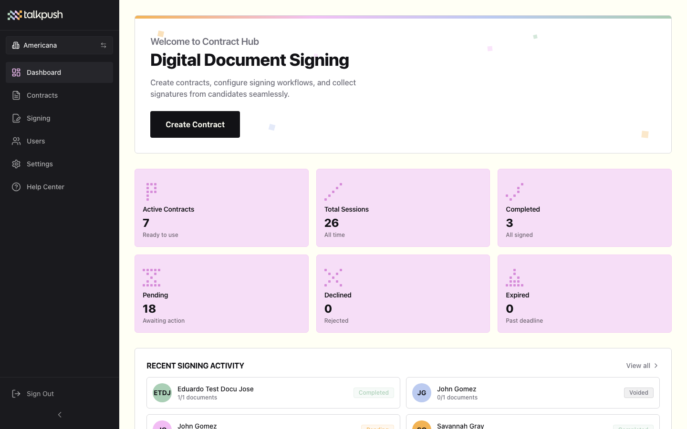
Métricas del Panel
El panel muestra estadísticas clave de un vistazo:
- Total de Sesiones — Número total de sesiones de firma creadas.
- Completadas — Sesiones donde todos los documentos han sido firmados.
- En Progreso — Sesiones donde el candidato ha comenzado pero no ha terminado.
- Pendientes — Sesiones creadas pero aún no abiertas por el candidato.
- Expiradas/Rechazadas — Sesiones que pasaron su fecha límite o fueron explícitamente rechazadas.
Actividad Reciente
Debajo de las métricas, un feed cronológico muestra los eventos más recientes de sesiones de firma — incluyendo sesiones creadas, vistas, completadas y expiradas.
Gestión de Contratos
La página Contratos (accesible desde la barra lateral) es donde gestiona sus plantillas de contrato. Cada plantilla representa un tipo de documento reutilizable que puede ser enviado a los candidatos.
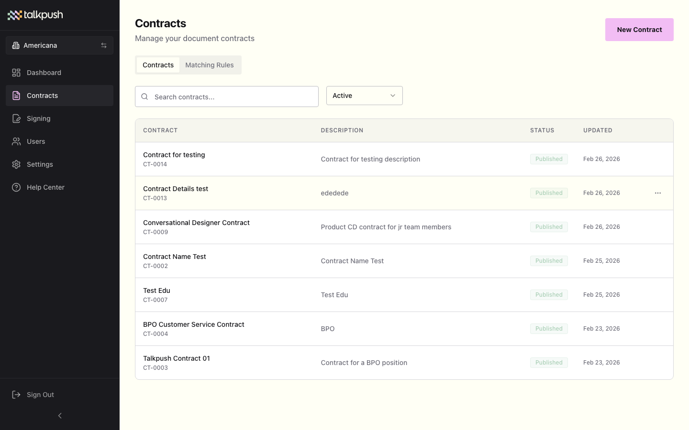
Características de la Lista de Contratos
- Búsqueda y Filtrado — Busque por nombre o filtre por estado (Borrador, Activo, Archivado) y categoría.
- Insignias de Estado — Borrador Activo Archivado
- Menú de Acciones — Cada fila tiene un menú con opciones para Editar, Duplicar, Archivar o Eliminar.
- Conteo de Campos — Muestra cuántos campos interactivos se han colocado en cada plantilla.
Crear un Contrato
-
Haga clic en "Nuevo Contrato"
Desde la página de Contratos, haga clic en el botón de acción principal. -
Suba su documento
Arrastre y suelte o seleccione un archivo PDF o DOCX (máximo 20 MB). El documento se renderiza como vista previa después de la carga. -
Configure los metadatos
- Nombre — Un nombre claro y descriptivo para la plantilla (ej., "Contrato de Trabajo - México").
- Categoría — Agrupe las plantillas por tipo (ej., Empleo, NDA, Política).
- Descripción — Notas opcionales para referencia interna.
-
Guarde como Borrador
La plantilla se crea en estado Borrador. Ahora puede añadir campos usando el Editor de Campos y configurar sobres.
Constructor de Plantillas
El Constructor de Plantillas es donde configura los metadatos, la información del firmante y las propiedades del documento de un contrato. Accédalo haciendo clic en Editar en cualquier contrato de la lista.
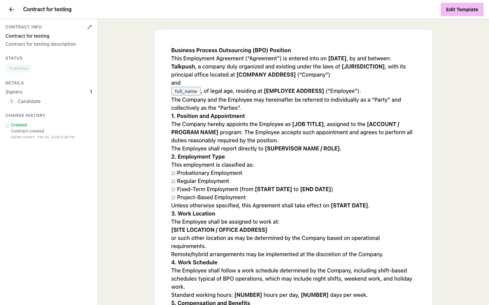
Secciones del Constructor
- Información Básica — Nombre, categoría, descripción y documento cargado.
- Vista Previa del Documento — Renderizado página por página del PDF/DOCX cargado.
- Configuración del Firmante — Defina quién necesita firmar. Actualmente Contract Hub soporta escenarios de firmante único (el candidato).
- Estado de Publicación — Cambie entre Borrador y Activo. Solo las plantillas activas pueden incluirse en sobres.
Editor de Campos
El Editor de Campos es la herramienta visual arrastrar y soltar donde coloca campos interactivos directamente sobre las páginas de su contrato. Cada campo se convierte en un elemento rellenable o firmable que el candidato completará durante la sesión de firma.
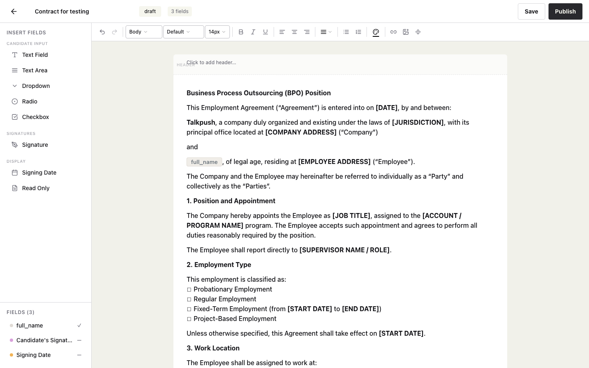
Cómo Usar el Editor
-
Seleccione un tipo de campo
Desde la barra de herramientas, haga clic en el tipo de campo que desea añadir (Firma, Campo de Texto, Casilla de Verificación, etc.). -
Haga clic en el documento para colocarlo
Haga clic en cualquier lugar de la página del contrato para posicionar el campo. También puede arrastrar campos existentes para reposicionarlos. -
Configure las propiedades del campo
Haga clic en un campo colocado para abrir su panel de propiedades. Configure:- Etiqueta — El nombre mostrado al candidato.
- Obligatorio — Si el candidato debe completar este campo para enviar.
- Fuente de datos — Elija entre "Entrada del candidato" o "Atributo de Talkpush" (auto-llenado).
- Clave de atributo de Talkpush — Si la fuente es auto-llenado, seleccione qué atributo del candidato usar.
- Valor predeterminado — Un valor de respaldo si el atributo auto-llenado está vacío.
- Clave de escritura diferida — Opcionalmente, escriba el valor ingresado de vuelta al perfil del candidato en Talkpush.
-
Redimensione según necesite
Arrastre los controladores de esquina para redimensionar campos, especialmente áreas de firma y campos de texto. -
Guarde
Haga clic en Guardar para persistir la ubicación de los campos. Los campos se almacenan como coordenadas relativas a la página.
Atajos de Teclado
| Atajo | Acción |
|---|---|
| Supr / Retroceso | Eliminar el campo seleccionado |
| Ctrl+Z | Deshacer la última acción |
| Ctrl+S | Guardar la ubicación de campos |
| Teclas de Flecha | Mover el campo seleccionado en pequeños incrementos |
Referencia de Tipos de Campos
| Tipo | Descripción | Caso de Uso |
|---|---|---|
| Firma | Pad de firma para dibujar o escribir. Se renderiza como una imagen en el documento firmado. | Firma del candidato, iniciales |
| Campo de Texto | Entrada de texto de una línea con ancho configurable. | Nombre, número de identificación, dirección |
| Área de Texto | Entrada de texto de múltiples líneas para contenido más largo. | Notas adicionales, comentarios |
| Casilla de Verificación | Una sola casilla marcar/desmarcar. | Acuerdos de términos, confirmaciones de políticas |
| Menú Desplegable | Lista de selección con opciones predefinidas. | Departamento, ubicación, tipo de contrato |
| Botón de Radio | Selección única de un grupo de opciones. | Sí/No, selección de turno |
| Fecha Automática | Se auto-llena con la fecha actual al momento de la firma. | Fecha de firma, marca de tiempo del documento |
| Solo Lectura | Texto estático mostrado al candidato pero no editable. Útil para información pre-llenada. | Nombre de la empresa, nombre de la campaña |
Sobres
Los Sobres agrupan una o más plantillas de contrato que se envían juntas a un candidato como un solo paquete de firma. Cuando un candidato coincide con las reglas de un sobre, recibe todos los documentos del sobre en una sola sesión de firma.
Crear un Sobre
-
Navegue a Sobres
Desde la barra lateral, haga clic en Sobres. -
Haga clic en "Nuevo Sobre"
Abra el formulario de creación de sobre. -
Nombre el sobre
Déle un nombre descriptivo (ej., "Paquete de Onboarding - Centro de Contacto"). -
Añada plantillas
Seleccione una o más plantillas activas para incluir. El orden importa — los candidatos verán los documentos en el orden listado. -
Configure reglas de asignación
Defina condiciones de filtro que determinan qué candidatos reciben este sobre. Ver Reglas de Asignación a continuación. -
Active el sobre
Establezca el estado a Activo para comenzar a asignar candidatos automáticamente.
Reglas de Asignación
Las Reglas de Asignación determinan qué candidatos reciben qué sobres. Cada sobre puede tener una o más condiciones de filtro basadas en atributos del candidato de Talkpush.
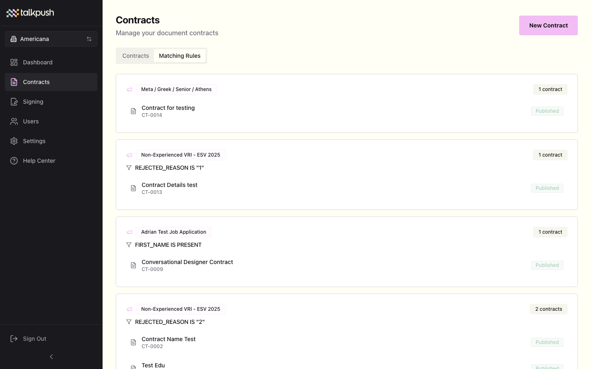
Componentes de los Filtros
| Componente | Descripción |
|---|---|
| Atributo | El campo del candidato de Talkpush a evaluar (ej., país, departamento, tipo de trabajo, campaña). |
| Operador | La condición de comparación: es igual a, no es igual a, contiene, comienza con, etc. |
| Valor | El valor objetivo a comparar (ej., "México", "Soporte", "Tiempo completo"). |
| Lógica | AND — Todas las condiciones deben cumplirse. OR — Al menos una condición debe cumplirse. |
Ejemplo
Para enviar un paquete de onboarding a nuevos agentes de centro de contacto en México:
- País
es igual a"México" AND - Departamento
es igual a"Centro de Contacto" AND - Tipo de Trabajo
es igual a"Tiempo Completo"
Sesiones de Firma
Las Sesiones de Firma representan instancias individuales de un candidato firmando un sobre de documentos. Cada sesión rastrea su propio progreso, estado y seguimiento de auditoría.
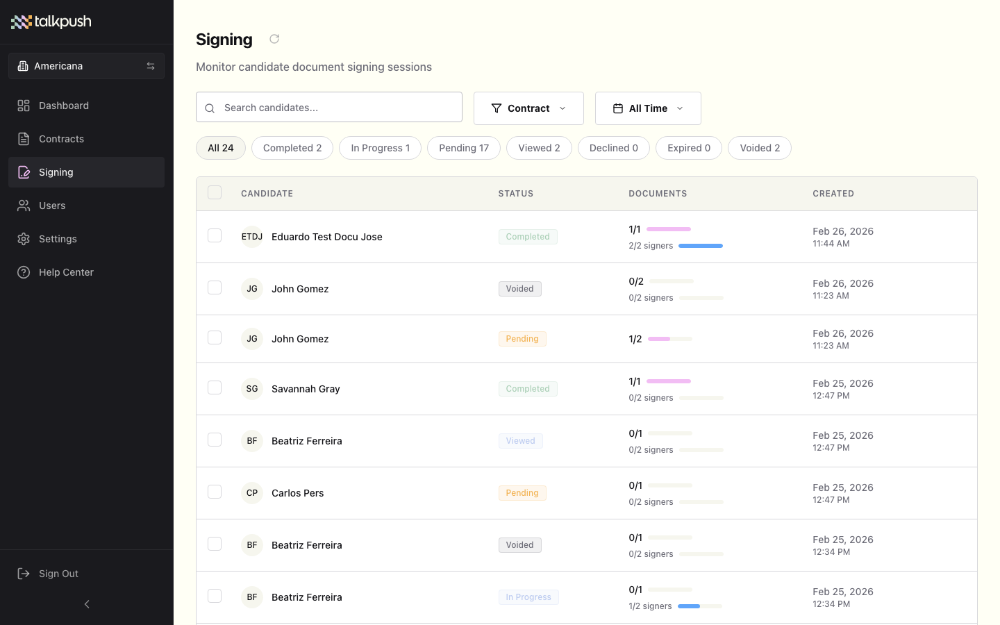
Información de la Sesión
Cada sesión de firma muestra:
- Candidato — Nombre y correo electrónico del firmante.
- Sobre — Qué paquete de documentos se envió.
- Estado — Estado actual: Pendiente, Visto, En Progreso, Completado, Rechazado, o Expirado.
- Creada — Cuándo se inició la sesión.
- Expira — La fecha límite para completar la firma.
Acciones de la Sesión
- Ver Detalles — Abra la línea de tiempo completa de la sesión y seguimiento de auditoría.
- Descargar Documento — Descargue el contrato firmado (disponible después de completar).
- Reenviar Enlace — Envíe el enlace de firma nuevamente al candidato.
- Anular — Cancele la sesión e invalide el enlace de firma.
Gestión de Usuarios
La página Usuarios le permite invitar miembros del equipo, asignar roles y gestionar el acceso al espacio de trabajo de su empresa. Los Administradores de Empresa y Propietarios de Talkpush pueden gestionar usuarios.
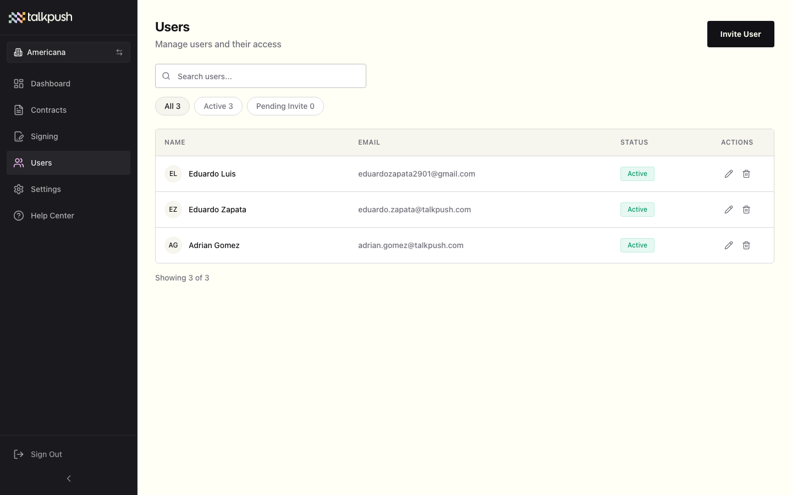
Invitar a un Nuevo Usuario
-
Haga clic en "Invitar Usuario"
Abra el formulario de invitación desde la página de Usuarios. -
Ingrese los detalles del usuario
- Correo electrónico — La dirección de correo del nuevo miembro del equipo.
- Nombre — Nombre y apellido.
- Rol — Seleccione Administrador de Empresa (acceso completo al espacio de trabajo) o Usuario de Empresa (solo ver sesiones de firma).
-
Enviar Invitación
Haga clic en Enviar Invitación. El usuario recibirá un correo con un enlace para configurar su contraseña y acceder a Contract Hub.
Lista de Usuarios
La tabla de usuarios muestra todos los miembros del equipo con su nombre, correo, rol y estado. Puede filtrar por:
- Todos — Mostrar todos los usuarios.
- Activos — Usuarios que han aceptado su invitación y configurado su cuenta.
- Invitación Pendiente — Usuarios que han sido invitados pero aún no han creado su contraseña.
Gestión de Usuarios
- Cambiar Rol — Actualice el rol de un usuario desde el menú de acciones en su fila.
- Reenviar Invitación — Si la invitación de un usuario expiró o se perdió, reenvíela desde el menú de acciones.
- Desactivar — Deshabilite el acceso de un usuario sin eliminar su cuenta.
Gestión de Empresas
La Gestión de Empresas está disponible para Propietarios de Talkpush y permite crear y configurar tenants de empresa dentro de Contract Hub. Cada empresa opera como un espacio de trabajo independiente con sus propias plantillas, sesiones, usuarios y configuraciones.
Crear una Empresa
-
Navegue a Gestión de Empresas
Desde la pantalla del Selector de Empresa, haga clic en Gestionar Empresas. -
Haga clic en "Añadir Empresa"
Abra el formulario de nueva empresa. -
Complete los Datos de la Empresa
- Nombre de la Empresa — El nombre visible de la organización.
- País — El país principal de operación de la empresa.
- ID de Tenant — Un identificador que vincula esta empresa con el tenant del CRM de Talkpush.
- Subdominio — Subdominio personalizado opcional para las URLs de firma de la empresa.
- ID de Carpeta — Identificador opcional de carpeta de Talkpush para delimitar datos.
-
Guardar
La empresa se crea con una clave API auto-generada (con prefijotk_) para integraciones del sistema. La empresa se establece como Activa por defecto.
Configuración de la Empresa
Para cada empresa, los administradores pueden configurar:
- Estado — Activa o Inactiva. Las empresas inactivas se ocultan del Selector de Empresa para usuarios no propietarios.
- Clave API — Clave de autenticación auto-generada para integraciones API. Puede regenerarse si se compromete.
- Subdominio — Subdominio personalizado con marca para los enlaces de firma dirigidos al candidato.
Configuración
La página de Configuración permite a los Administradores de Empresa y Propietarios configurar preferencias a nivel de organización.
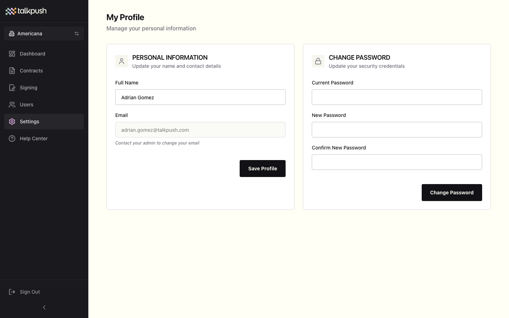
Ajustes Disponibles
- Nombre de la Empresa — Actualice el nombre visible de su organización.
- Expiración Predeterminada — Establezca el número predeterminado de días antes de que una sesión de firma expire (los candidatos ya no pueden acceder al enlace de firma después de este período).
- Programa de Recordatorios — Configure recordatorios automáticos por correo para sesiones pendientes (ej., 1 día antes de expirar, 3 días después de la creación).
- Marca — Suba un logotipo de empresa y establezca los colores de marca para las páginas de firma dirigidas al candidato.
- Preferencias de Notificación — Elija qué notificaciones por correo reciben los administradores (ej., sesión completada, sesión rechazada, sesión expirada).
Experiencia de Firma del Candidato
Los candidatos interactúan con Contract Hub a través de una interfaz de firma dedicada y optimizada para móviles. No se requiere cuenta ni aplicación — los candidatos simplemente hacen clic en un enlace enviado por WhatsApp, SMS o correo electrónico y completan el proceso de firma en su navegador.
La experiencia del candidato está diseñada para ser simple, accesible y guiada:
- Pantalla de Bienvenida — Introducción e instrucciones.
- Leer el Contrato — Desplazarse por el documento completo.
- Consultar al Asistente IA — Opcionalmente chatear con una IA que explica el contrato en lenguaje sencillo.
- Completar Campos y Firmar — Completar los campos requeridos y añadir su firma.
- Confirmación — Recibir una pantalla de finalización y opción de descarga.
Pantalla de Bienvenida
Cuando un candidato abre su enlace de firma, se le recibe con una pantalla de bienvenida que muestra el logotipo de la empresa, una breve explicación de lo que hará y un botón Comenzar.
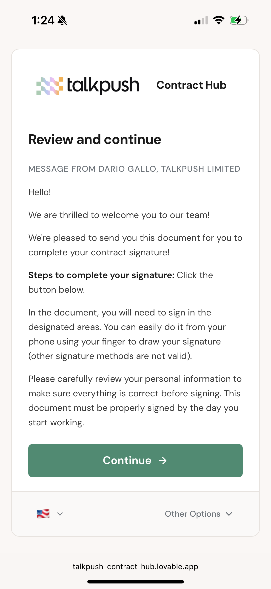
Lectura del Contrato
El contrato se muestra en un visor con scroll optimizado para móviles. Los candidatos pueden leer todo el documento antes de completar cualquier campo. La interfaz destaca qué secciones requieren atención.
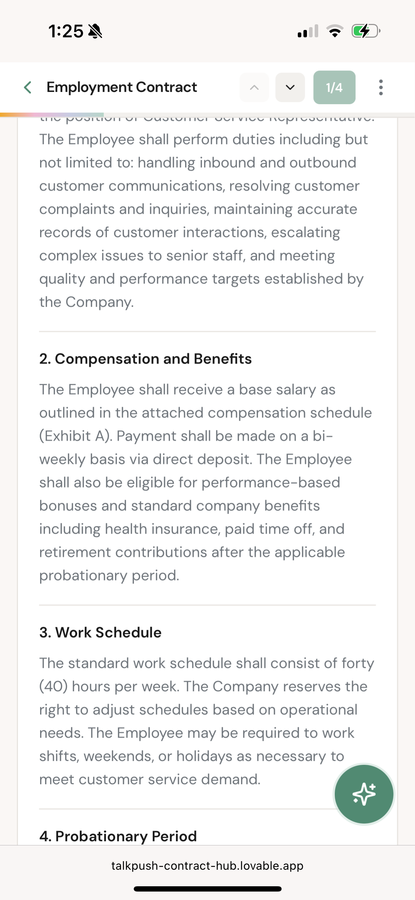
Asistente IA del Contrato
Un chatbot impulsado por IA está disponible durante toda la experiencia de firma. Los candidatos pueden tocar el icono de chat para hacer preguntas sobre cualquier parte del contrato. La IA explica cláusulas, define términos legales y aclara obligaciones — todo en un lenguaje sencillo y amigable.
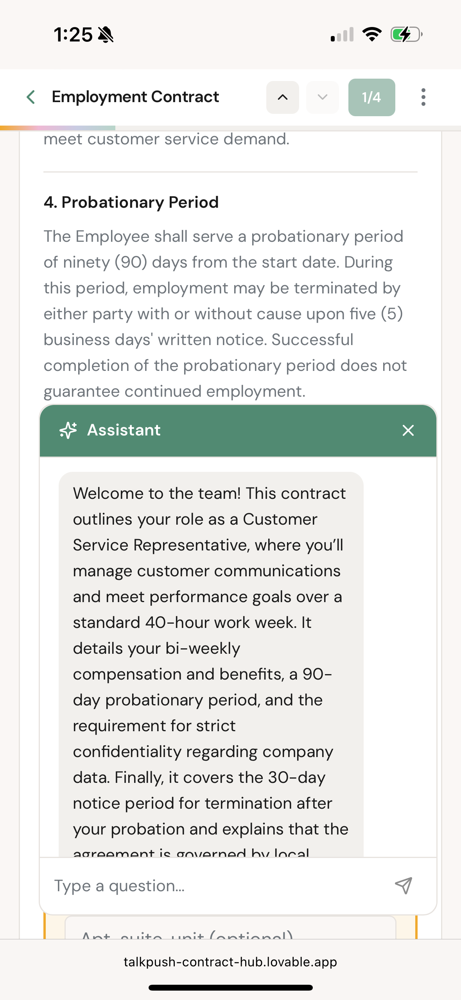
Firma del Contrato
Después de leer el contrato, el candidato procede al paso de firma. Completa los campos requeridos (texto, fechas, casillas) y dibuja o escribe su firma en el área designada. Todos los campos pre-llenados con datos de Talkpush son visibles y pueden revisarse.
Una vez completados todos los campos requeridos, el candidato toca Completar Firma para enviar el documento. El sistema registra un evento de auditoría con marca de tiempo para la firma.
Confirmación
Después de firmar, el candidato ve una pantalla de confirmación con un mensaje de éxito. Puede descargar una copia del documento firmado para sus registros. El estado de la sesión se actualiza a Completado y el seguimiento de auditoría se finaliza.
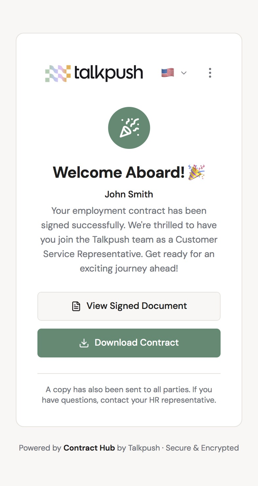
Referencia de Estados
Estados de Sesión de Firma
| Estado | Insignia | Descripción |
|---|---|---|
| Completado | Completado | Todos los documentos han sido firmados exitosamente. |
| En Progreso | En Progreso | El candidato ha comenzado a completar campos pero no ha terminado. |
| Pendiente | Pendiente | La sesión ha sido creada pero el candidato aún no ha abierto el enlace. |
| Visto | Visto | El candidato abrió el enlace de firma pero no ha comenzado a completar campos. |
| Rechazado | Rechazado | El candidato se negó explícitamente a firmar el documento. |
| Expirado | Expirado | El plazo de firma pasó sin completarse. |
| Anulado | Anulado | Un administrador canceló manualmente la sesión. |
Estados de Plantilla
| Estado | Insignia | Descripción |
|---|---|---|
| Borrador | Borrador | En configuración. No disponible para envío. |
| Activo | Activo | Publicado y disponible para asignar a candidatos. |
| Archivado | Archivado | Retirado. Las sesiones existentes continúan pero no se crean nuevas. |
Roles y Permisos
Contract Hub utiliza un sistema de control de acceso basado en roles (RBAC) de tres niveles. A cada usuario se le asigna exactamente un rol que determina lo que puede ver y hacer.
| Capacidad | Propietario Talkpush | Admin de Empresa | Usuario de Empresa |
|---|---|---|---|
| Ver Panel Principal | Sí | Sí | No |
| Gestionar Plantillas (Contratos) | Sí | Sí | No |
| Usar Editor de Campos | Sí | Sí | No |
| Configurar Sobres | Sí | Sí | No |
| Configurar Reglas de Asignación | Sí | Sí | No |
| Ver Sesiones de Firma | Sí | Sí | Sí |
| Gestionar Usuarios | Sí | Sí | No |
| Gestionar Configuración | Sí | Sí | No |
| Crear y Gestionar Empresas | Sí | No | No |
| Acceso a Todos los Espacios | Sí | Solo asignados | Solo asignados |
| Acceso al Centro de Ayuda | Sí | Sí | Sí |
Descripción de Roles
- Propietario de Talkpush — Super-administrador con acceso inter-organizacional. Puede crear y gestionar empresas, invitar usuarios a cualquier empresa y acceder a todas las funcionalidades en todos los tenants. Destinado al personal interno de Talkpush.
- Administrador de Empresa — Acceso completo dentro del espacio de trabajo de su empresa asignada. Puede gestionar plantillas, sobres, reglas de asignación, usuarios y configuración. No puede crear nuevas empresas ni acceder a otros espacios de trabajo.
- Usuario de Empresa — Rol de acceso limitado. Solo puede ver y hacer seguimiento de Sesiones de Firma y acceder al Centro de Ayuda. No puede gestionar plantillas, usuarios ni configuración. Ideal para reclutadores o coordinadores que necesitan monitorear el progreso de firmas sin capacidades administrativas.
Seguridad y Cumplimiento
Contract Hub está construido con la seguridad y el cumplimiento legal como pilares fundamentales, utilizando Supabase como infraestructura backend con características de seguridad de nivel empresarial.
Autenticación y Acceso
- Google SSO — Inicio de sesión único seguro a través de Google Workspace con OAuth 2.0.
- Correo/Contraseña — Autenticación gestionada por Supabase con hash seguro de contraseñas.
- Control de Acceso Basado en Roles — RBAC de tres niveles con protección a nivel de ruta. Las rutas protegidas verifican los permisos del rol antes del acceso a la página.
- Aislamiento Multi-Tenant — Cada espacio de trabajo de empresa está completamente aislado. Los usuarios solo pueden acceder a datos dentro de sus empresas asignadas.
- Registro Solo por Invitación — No hay auto-registro. Los usuarios deben ser invitados por un administrador.
Seguridad de Firma
- Enlaces de Firma Únicos — Cada sesión de firma genera una URL única basada en token con tiempo limitado.
- Seguimiento de Auditoría SHA-256 — Cada acción se registra con hash criptográfico para asegurar evidencia anti-manipulación.
- Registro de IP y Dispositivo — El seguimiento de auditoría captura direcciones IP y cadenas de agente de usuario para cada evento.
- Expiración de Sesión — Los enlaces de firma expiran automáticamente después de la fecha límite configurada.
- Anulación — Los administradores pueden anular sesiones activas, invalidando inmediatamente el enlace de firma.
Cumplimiento Legal
- Ley ESIGN (Estados Unidos) — Las firmas electrónicas son legalmente equivalentes a las firmas manuscritas.
- UETA (Ley Uniforme de Transacciones Electrónicas) — Adoptada en 49 estados de EE.UU.
- eIDAS (Unión Europea) — Cumple con la regulación de la UE sobre identificación electrónica y servicios de confianza.
- Cifrado de Datos — Todos los datos están cifrados en tránsito (TLS 1.2+) y en reposo.
Integración con Talkpush
Contract Hub se integra profundamente con la plataforma CRM de Talkpush, permitiendo flujos de trabajo automatizados de contratos dentro del proceso de reclutamiento más amplio.
Puntos de Integración
- Sincronización de Datos del Candidato — Nombres, correos, teléfonos y atributos personalizados se obtienen de los perfiles de Talkpush para auto-llenar campos del contrato.
- Disparadores de Campaña — Los contratos pueden enviarse automáticamente cuando los candidatos alcanzan una etapa específica en una campaña de Talkpush.
- Asignación por Atributos — Use más de 14 atributos del candidato de Talkpush para determinar qué contratos se envían a través de los sobres.
- Escritura Diferida — Los valores ingresados por los candidatos durante la firma pueden escribirse de vuelta a su perfil de Talkpush usando la configuración
writebackAttributeKey. - Eventos de Estado — Los eventos de firma de contratos (creado, visto, firmado, rechazado, expirado) se comunican de vuelta a Talkpush para automatización de flujos de trabajo.
Ciclo de Vida de Eventos
| Evento | Cuándo se Dispara | Datos Incluidos |
|---|---|---|
session.created | Se inicia una nueva sesión de firma | ID de sesión, ID del candidato, ID de plantilla |
session.viewed | El candidato abre el enlace de firma | ID de sesión, marca de tiempo, IP |
session.in_progress | El candidato comienza a completar campos | ID de sesión, marca de tiempo |
session.completed | Todos los documentos están firmados | ID de sesión, URL del documento firmado, marca de tiempo |
session.declined | El candidato se niega a firmar | ID de sesión, razón (si se proporcionó), marca de tiempo |
session.expired | Pasa el plazo de firma | ID de sesión, marca de tiempo de expiración |
session.voided | El administrador cancela la sesión | ID de sesión, anulado por, marca de tiempo |
field.writeback | Un valor de campo se escribe en Talkpush | Clave de atributo, valor, ID del candidato |
Preguntas Frecuentes
¿Qué formatos de archivo puedo subir?
Contract Hub soporta documentos PDF y DOCX (Microsoft Word). El tamaño máximo de archivo es 20 MB. Ambos formatos se renderizan en el Editor de Campos para la colocación visual de campos.
¿Puedo enviar múltiples contratos a la vez?
Sí. Use los Sobres para agrupar múltiples plantillas juntas. Cuando un candidato coincide con las reglas del sobre, todas las plantillas se envían como parte de una sola sesión de firma. Los candidatos ven su progreso como "2/3 documentos", etc.
¿Cuál es la diferencia entre el Constructor de Plantillas y el Editor de Campos?
El Constructor de Plantillas es para editar metadatos del contrato (nombre, categoría, descripción) y configurar firmantes. El Editor de Campos es la herramienta visual de arrastrar y soltar donde coloca campos interactivos directamente sobre las páginas del documento. Se acceden desde botones diferentes en la página de Contratos.
¿Qué pasa cuando una sesión expira?
El enlace de firma se desactiva y el candidato ya no puede acceder al documento. El estado de la sesión cambia a Expirado. Para dar más tiempo al candidato, cree una nueva sesión con un enlace nuevo.
¿Los candidatos pueden firmar en el móvil?
Sí. La experiencia de firma está completamente optimizada para móviles. Los candidatos pueden leer, completar campos y firmar contratos en cualquier navegador de smartphone o tablet sin instalar una aplicación.
¿Las firmas electrónicas son legalmente válidas?
Sí. Contract Hub cumple con la Ley ESIGN, UETA y las regulaciones eIDAS, haciendo que las firmas electrónicas sean legalmente equivalentes a las firmas manuscritas en Estados Unidos, Europa y la mayoría de jurisdicciones internacionales.
¿Cómo cambio entre empresas?
Haga clic en el nombre de la empresa en la barra lateral izquierda (mostrado con un icono de edificio). Esto le lleva de vuelta al Selector de Empresa donde puede elegir un espacio de trabajo diferente. Todos los datos están limitados a la empresa seleccionada.
¿Cuál es la diferencia entre la asignación AND y OR en los sobres?
AND significa que el candidato debe cumplir todas las condiciones de filtro. OR significa que el candidato solo necesita coincidir con al menos una condición. AND es más estricto (para asignación precisa), OR es más amplio (para distribución más amplia).
¿Cómo funciona el auto-llenado de datos?
Los campos configurados con la fuente de datos Atributo de Talkpush obtienen automáticamente valores del perfil del candidato en Talkpush (ej., nombre, correo, dirección). Opcionalmente puede configurar isEditableWhenAutofilled para que el candidato pueda modificar el valor pre-llenado, y fallbackValue para proporcionar un valor predeterminado cuando el atributo esté vacío.
¿Puedo usar Google SSO para iniciar sesión?
Sí. Haga clic en Continuar con Google en la página de inicio de sesión para autenticarse con su cuenta de Google Workspace. Su cuenta de Google debe estar autorizada por su administrador. Si ve un error de "no autorizado", contacte a su administrador para una invitación.
¿Qué es un Usuario de Empresa y a qué puede acceder?
Un Usuario de Empresa es un rol de acceso limitado destinado a reclutadores o coordinadores. Puede ver y hacer seguimiento de Sesiones de Firma y acceder al Centro de Ayuda, pero no puede gestionar plantillas, sobres, usuarios ni configuración. Esto mantiene la interfaz simple para los miembros del equipo que solo necesitan monitorear el progreso de los contratos.
¿Puedo escribir valores de campos de vuelta a Talkpush?
Sí. Configure el writebackAttributeKey en cualquier campo para sincronizar automáticamente la entrada del candidato de vuelta a su perfil de Talkpush después de la firma. Esto es útil para capturar nueva información como contactos de emergencia, datos bancarios o identificaciones fiscales que se ingresan durante el proceso de firma del contrato.